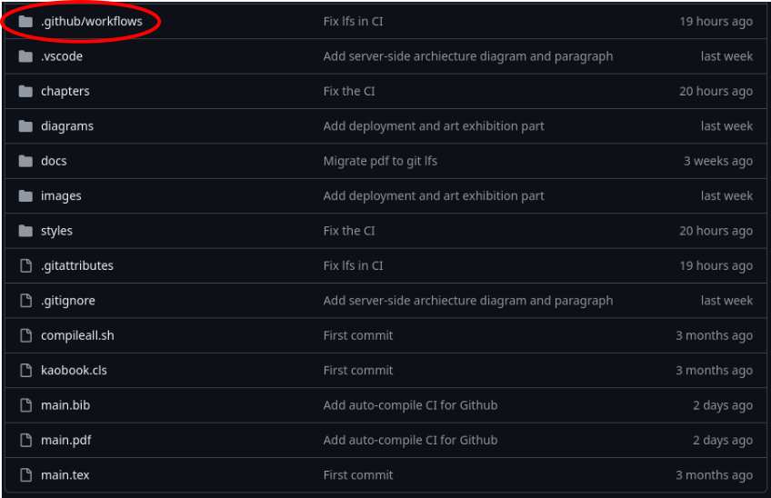

<!DOCTYPE html>
<html lang="en">
<head>
    <meta charset="UTF-8">
    <link rel="stylesheet" href="style.css">
    <title>CI tutorial</title>
</head>
</html>
<body>
    <h1>Welcome to my latex master thesis compilation tutorial</h1>
    <h2>I- Get your master thesis from overleaf</h2>
    <p>First, you need to get your master thesis from overleaf. You can download it as a zip file.
        Go to overleaf, click on the menu icon on the top left corner: <br>
        <!-- include image  -->
        
    </p>
    <p>
        Then click on the source button.<br>
        
        <br>
        and it will download the zip file for you.
    </p>
    <h2>II- Create a Github repo</h2>
    <p>Go to github and create a new repository. You can name it whatever you want.</p>
    <p>Clone the repo to your local computer. Then unzip the zip file from Overleaf in this repo</p>

    <h2>III- Add Github actions (CI)</h2>
    <p>
        Now, it is time to create the CI (Continuous Integration) files that will compile the doc for you. <br>
        Create a new folder in the root of your repo and name it "<strong>.github</strong>"" (the "." before is important).<br>
        Inside this folder, create a new folder named <strong>workflows</strong>.
        Example: <br>
        
    </p>
    <p>
        Inside the workflows folder, create a new file named <strong>compile-latex.yml</strong>.<br>
        Add the following code to this file:
    </p>
    <pre>
        <code>
            name: Build LaTeX document
            on: [push]
            jobs:
                build_latex:
                    runs-on: ubuntu-latest
                    steps:
                      - name: Set up Git repository
                        uses: actions/checkout@v4
                      - name: Compile latex
                        uses: Jatus93/Latex-multicompiler@master
                        continue-on-error: true
                        with:
                          path_to_list: main.tex
                          artifact: true
                      - name: list repo
                        run: ls
                      - name: Upload PDF file
                        uses: actions/upload-artifact@v4
                        with:
                          name: PDF
                          path: main.pdf
                          retention-days: 30
        </code>
    </pre>
    <p>You can also find the file here: <a href="./compile-latex.yml">file</a></p>
    <p>Now, push the changes to your repo. Go to the actions tab in your repo and you will see the CI running.</p>
    <h2>IV- Download the compiled PDF</h2>
    <p>Once the CI is done, you can download the compiled PDF from the "Actions" tab on github.<br>
      
    </p>
    <p>Click on the latest CI run (workflows). It has to bee green and not still running to have the PDF.<br>
      Then go on the "Artifacts" part. You will see the PDF file there. Click on it to download it.<br>
      <br>
      Your PDF is available for 30 days here.
    </p>
    <p><strong>TELL ME IF THERE IS SOMETHING TO ADD</strong></p>
</body>
</html>